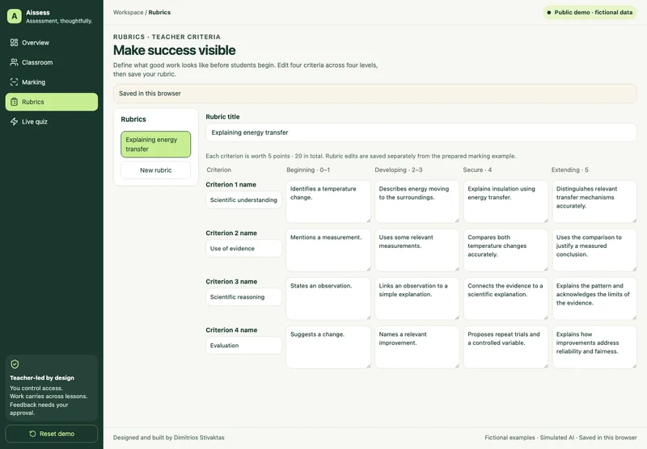

Enlarge screenshot.Source: Aissess
Rubric builder
Edit four criteria and four performance levels, save the rubric, and make expectations explicit before reviewing work.
Teacher control. The teacher writes the criteria. Changing the rubric does not recalculate the demo’s prepared marking example.
Open a criterion, change its wording and save the rubric.